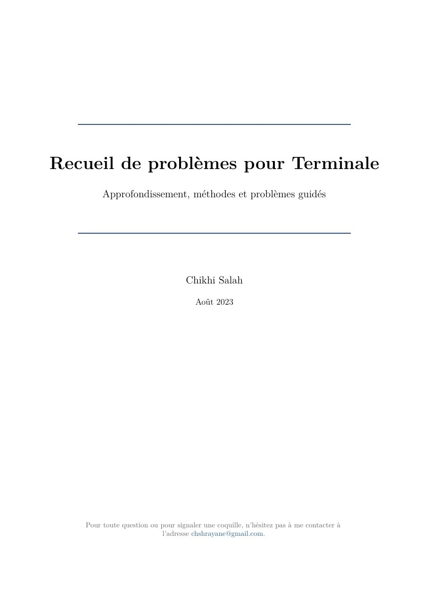

2023
Recueil de problèmes pour Terminale
A collection of problems I thought about in high school and at the start of my undergraduate studies, for final-year high-school students who want to go beyond the curriculum by proving interesting results themselves. A first part of preliminaries sets up the tools; a second part gathers long guided problems in the spirit of the Concours Général. Difficulty is rated from one to five stars, and hints are given for the hardest questions.